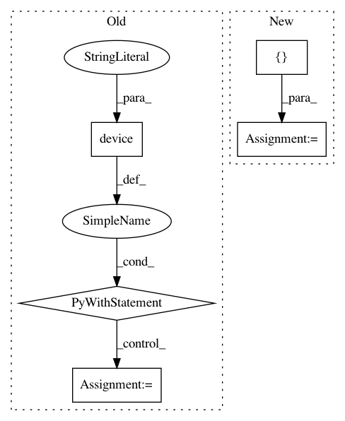

06e9e1f8737c47869ae092c0e769f1e754d4de61,cleverhans/picklable_model.py,PerImageStandardize,fprop,#PerImageStandardize#Any#,562
Before Change
def fprop(self, x, **kwargs):
// TODO: before adding dataset augmentation, we didn"t have to do this.
// Why?
with tf.device("/CPU:0"):
out = tf.map_fn(
lambda ex: tf.image.per_image_standardization(ex), x)
return out
class Dropout(Layer):
After Change
def fprop(self, x, **kwargs):
// TODO: before adding dataset augmentation, we didn"t have to do this.
// Why?
axis = [1, 2, 3]
mean = tf.reduce_mean(x, axis=axis, keepdims=True)
variance = tf.reduce_mean(
tf.square(x), axis=axis, keepdims=True) - tf.square(mean)
variance = tf.nn.relu(variance)
stddev = tf.sqrt(variance)
num_pixels = tf.reduce_prod(tf.shape(x)[1:])
In pattern: SUPERPATTERN
Frequency: 3
Non-data size: 5
Instances
Project Name: tensorflow/cleverhans
Commit Name: 06e9e1f8737c47869ae092c0e769f1e754d4de61
Time: 2018-10-03
Author: windqaq@gmail.com
File Name: cleverhans/picklable_model.py
Class Name: PerImageStandardize
Method Name: fprop
Project Name: tensorflow/tpu
Commit Name: aab77a2c18f67f2e9b8d3133a6cccfd4c2731e54
Time: 2018-04-23
Author: brennan.saeta@gmail.com
File Name: tools/diagnostics/diagnostics.py
Class Name: Diagnostics
Method Name: _run_tpu_computation
Project Name: tensorflow/tensorflow
Commit Name: f6e0ba743adf1656fb0c2cefbc24cfa20b7222b7
Time: 2020-11-23
Author: haoyuzhang@google.com
File Name: tensorflow/python/ops/batch_ops_test.py
Class Name: BatchOpsTest
Method Name: testBatchDecoratedWithCapturedInput